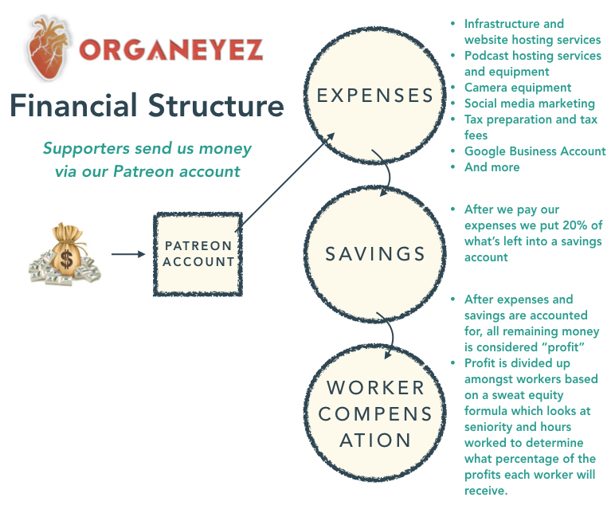

Chance to win an apparel/accessory gift package!
Complete our Activist Needs Survey
The Organeyez mission is to create tools and content that helps activists and social justice movements be more effective.
Starting off with a strong structure helps to lay a foundation that Organeyez can use to become efficient and sustainable. Structure is important because structure impacts both internal culture and the communities that we aim to serve.
We currently consist of four teams with Iris, our founder, operating as Executive Director:
Our organizational structure will develop over time, but we are currently prioritizing two structural focuses
1. Culture and Sustainability
2. Systems and Processes
We start off prioritizing these focuses because we want to stick around for a long time. Past experience has shown us that social justice work can lead to burnout and declines in mental health. We want to take the time to build a culture that is kind, considerate, flexible, and nurturing so that our workers enjoy their time with us. Before agreeing to launch, we carefully drafted a DNA document that outlines our principles, procedures, expectations, compensation structure, and long-term goals. Though we are still finalizing the fine details of our DNA, we move forward knowing that we are all aligned in what we envision for this organization.
Some of the systems and processes that will help to build a positive and sustainable culture are:
Our financial status is that of an LLC owned by the founder, Iris Nevins. This allows us to avoid the limitations and bureaucracy of running a non-profit. We ask supporters to help pay for organizational costs and labor by sending monthly payments to our Patreon account. This is our only form of income for the work that we do and we determine compensation based on sweat equity. What does this mean? We use our funds to first pay for expenses such as website, podcast, communication, accounting, and marketing services. If there is a shortage of funding, we help to cover costs ourselves. If there is a surplus of funding then we divide up the surplus amount based on a sweat equity formula that we created. This formula determines what percentage of the surplus we receive based on the hours of work we have completed and the length of time we have been contributing to the organization. Compensation is never guaranteed, so none of us are here for the money. Whether we earn $10 or $500, the mission is why we are here and all compensation is just a meaningful way to be rewarded for the work we do. 